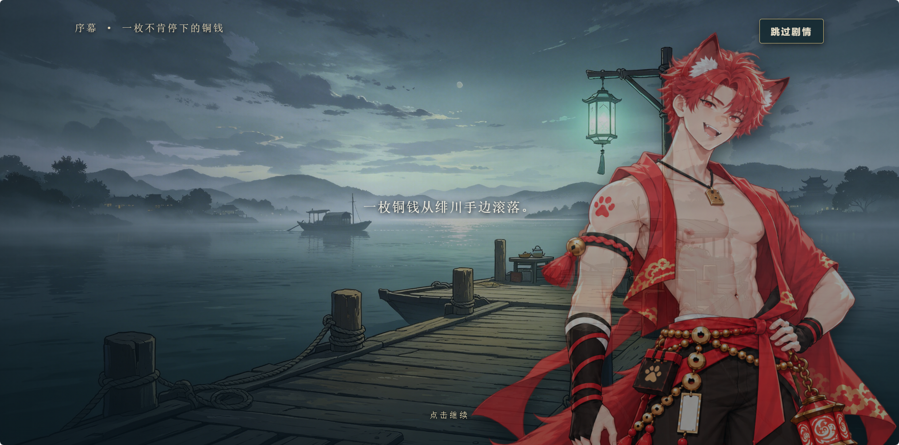
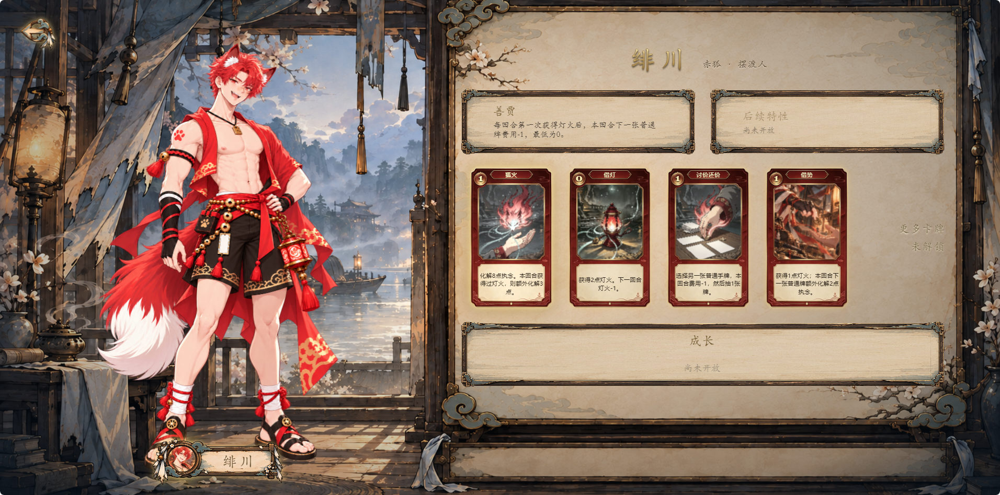
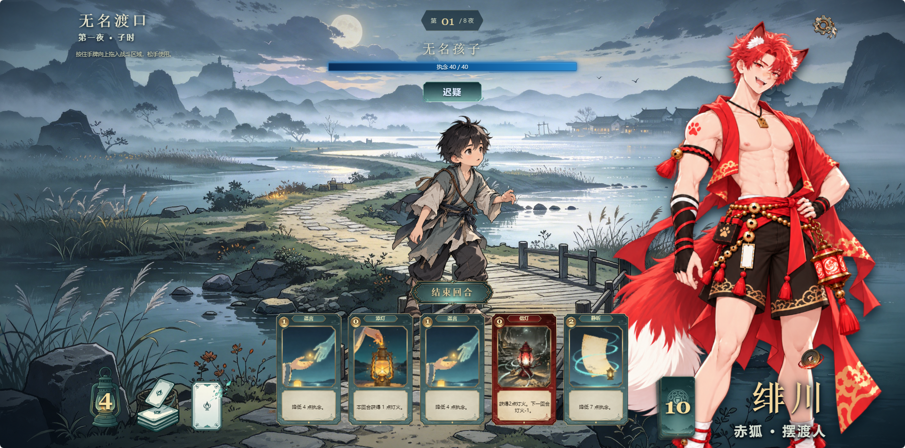
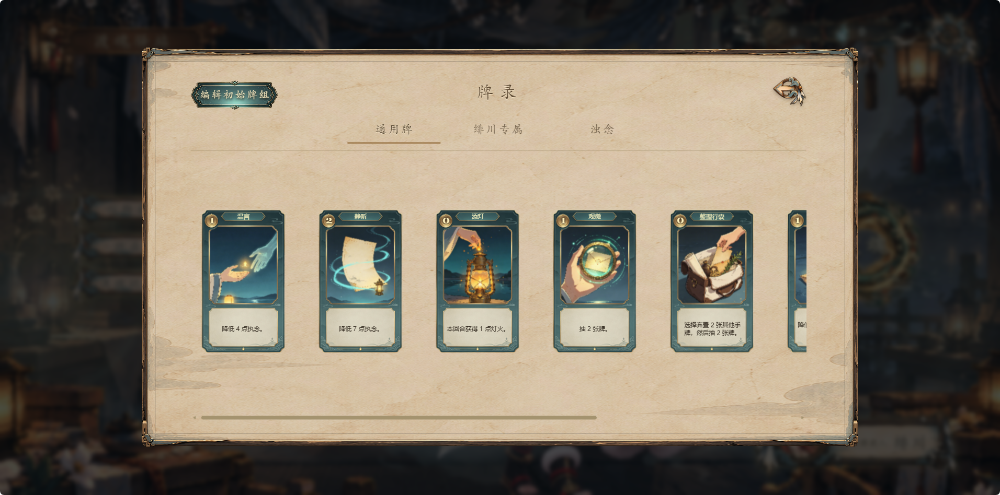
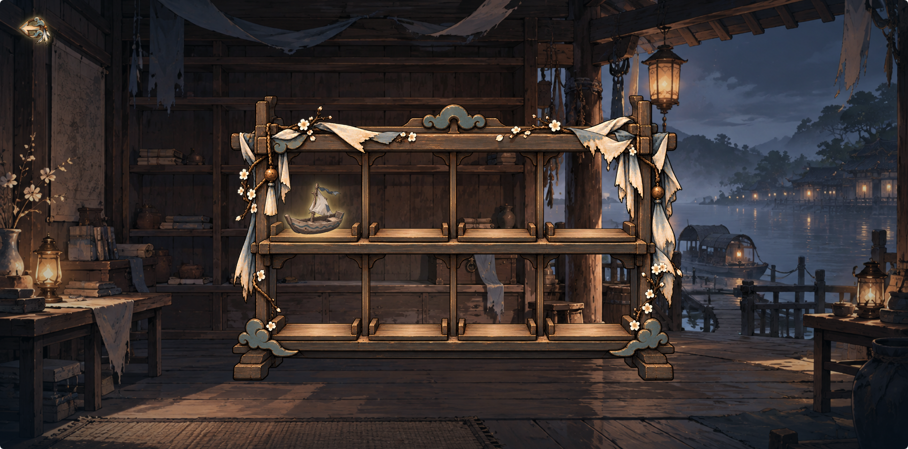

剧情结构
输入人物动机、章节节点和结局边界，生成对话与事件候选；逐段校对因果关系、人物口吻与剧情信息。
剧情驱动的卡牌冒险 Demo，已完成序章与第一章的可测试流程。AI 辅助剧情整理、视觉探索与代码实现。
玩家通过对话了解亡魂的经历，再在限定回合内出牌完成战斗。胜利后选择新卡牌，返回驿站查看获得的故事纪念物。项目独立完成，AI 辅助内容与功能制作，结果在可运行版本中核验。

按“需求约束 → AI 生成候选 → 人工筛选与修改 → 运行验证”的流程推进。剧情、视觉、玩法与开发分别设置检查标准。
输入人物动机、章节节点和结局边界，生成对话与事件候选；逐段校对因果关系、人物口吻与剧情信息。
按场景、人物与卡面用途描述构图及风格要求；筛选候选素材，检查角色一致性、文字区域和横屏适配。
先确定每回合可用资源、出牌费用和胜利条件，再核查卡牌效果及组合边界；使用固定随机种子复现对局并调整配置。
将章节、卡牌与交互需求拆为可验收任务，借助编码 AI 接入 TypeScript 工程；用构建、内容校验与浏览器测试检查结果。


第一章中的人物不断制造无法结清的账目。为让玩家在操作中感受到这一压力，战斗加入了不能直接使用的“虚账”牌：它会占据手牌，并可能复制到弃牌堆，影响之后的抽牌。
人物不断记账和补救，问题却持续累积。
回合结束时，手中的“虚账”会复制到弃牌堆；敌方行动也可能加入“虚账”，同时提高需要消除的目标值。
这类干扰牌最多同时存在 6 张；“清账”牌可移除一张，没有可移除的牌时不能使用。
试玩重点是玩家能否理解并应对干扰，以及这一机制是否让战斗变得拖沓。

已接入序章及第一章的剧情、战斗和战后流程，并实现角色页面、初始牌组编辑、故事纪念物收藏与进度保存。第一章包含六场主线战斗及三场可选战斗；规则和流程已通过测试，战斗难度与剧情节奏仍需继续试玩调整。

